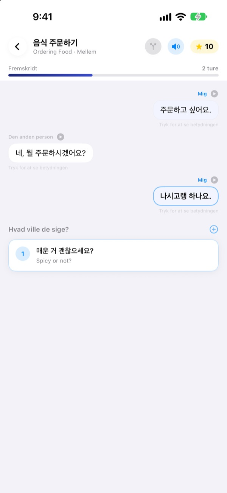
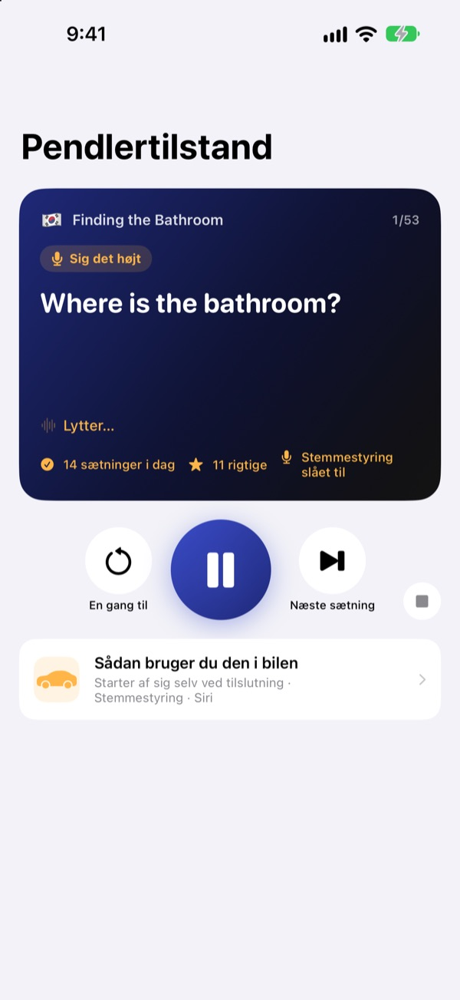
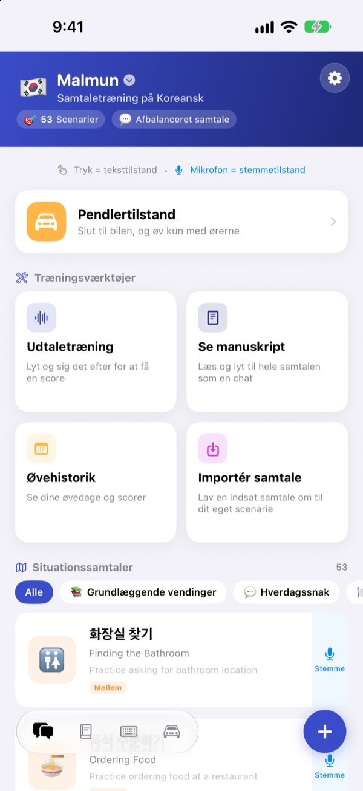
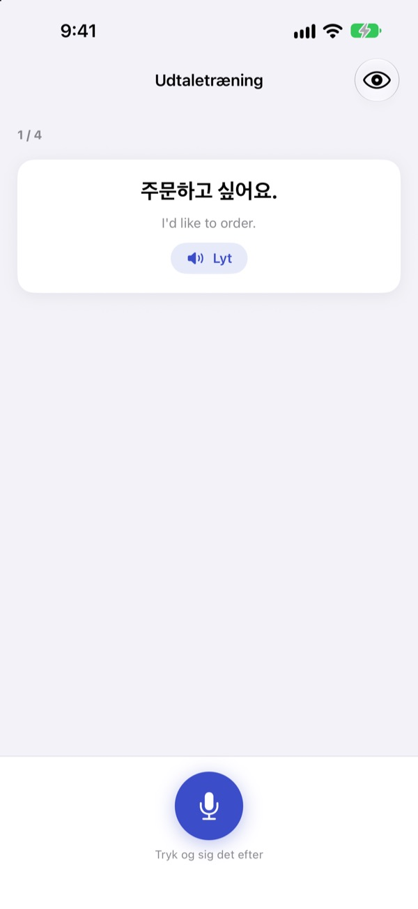

Slut med at gå i stå.
Sig det først.
Malmun er en samtaletræner, hvor hvert svar du vælger, sender dialogen i en ny retning. Lær koreansk, japansk, kinesisk, spansk eller indonesisk, og øv i bilen med kun ørerne og stemmen.
Forgrenede samtaler, udtaletræning og ordforråd er gratis.

Før selv samtalen videre
Det her er ”Godmorgen”, en indonesisk samtale, præcis som den ligger i appen. Hver sætning du vælger, fører samtalen et nyt sted hen.
Kunne sætningen, men ikke svaret?
I lærebogen følger samtaler altid manuskriptet. I virkeligheden svarer folk noget, du ikke havde set komme. Med Malmun går du alle grene af en samtale igennem på forhånd, så den næste sætning er klar, uanset hvad der kommer. Selv turen hjem bliver til træningstid.
Øv med ørerne, mens du kører
Pendlertilstand spiller gennem bilens højttalere via Bluetooth eller CarPlay. Først hører du betydningen, efter et signal får du tid til selv at sige det, og så spilles svaret én gang langsomt og én gang i normalt tempo.
Spring frem og lyt igen med rattets knapper, eller sig next, again eller slower, når det er din tur. Den holder pause, når navigationen giver besked.

Alle situationer fra rejsen og hverdagen
Hvert sprog har 53 situationssamtaler: det grundlæggende, hverdagssnak, restaurant, transport, lufthavn, hotel, shopping, sightseeing og nødsituationer.
Lærer du indonesisk, er der mere: 5 håndskrevne small talk-scenarier, 3 dagsforløb med 6 scener hver og et ugeskema samt 100 ord til forretningsrejsen.

Tjek at du sagde det rigtigt
Udtaletræningen giver dig point og farver de ord, du ramte, og dem du missede.
I manuskriptet ligger hele samtalen som en chat. Lyt den igennem, eller skjul betydningerne og test dig selv.

Kom i gang i tre trin
- 1
Vælg et sprog
Tryk på flaget øverst på startskærmen. Sætninger og ord gemmes hver for sig for hvert sprog.
- 2
Åbn en samtale
Tryk på svar i teksttilstand, eller tryk på mikrofonen og tal: stemmetilstand finder det svar, der ligger tættest på.
- 3
I bilen: Pendlertilstand
Forbind iPhone med bilen, og tryk på afspil. Du behøver ikke kigge på skærmen.
Styr Pendlertilstand
- Rat: næste nummer
- Næste sætning
- Rat: forrige nummer
- Samme sætning én gang til
- Afspilningsknap
- Pause og fortsæt
next·skip- Næste sætning
again·repeat- Hør igen
slower·faster- Skift oplæsningstempo
next scene- Videre til næste samtale
stop·pause- Stop træningen
- Siri: ”Start pendlertræning i Malmun”
- Start uden at røre iPhone
Når appen er på dansk, siger du stemmekommandoerne på engelsk. De bliver kun hørt, når det er din tur efter signalet. Den aktuelle sætning vises i bilens afspilningsinfo. Der er ingen særskilt appskærm i CarPlay.
Næsten alt er gratis. Malmun Pro åbner resten.
Gratis
- Forgrenet small talk og dagsforløb (indonesisk)
- Situationssamtaler: det grundlæggende og hverdagssnak
- Pendlertilstand, 3 scener om dagen
- Udtaletræning, manuskript, import af samtaler, træningshistorik
- Mine sætninger, ordkort, sætningstastatur
- Del scenarier med venner, lav scenarier med AI
Malmun Pro
- Alle situationssamtaler: restaurant, transport, lufthavn, hotel, shopping, sightseeing, nødsituationer
- Ubegrænset Pendlertilstand
- Gælder alle sprog
Årsabonnement eller ét køb for altid
Priserne står i appen og i App Store. Årsabonnementet fornyes automatisk, medmindre du opsiger det senest 24 timer før perioden slutter.
Ofte stillede spørgsmål
Hvilke sprog kan jeg lære?
Koreansk, japansk, kinesisk, spansk og indonesisk. Knapper og menuer er på dansk, men sætningernes betydning og stemmekommandoerne er på engelsk. Derfor står engelsk ikke selv på listen.
Hvordan bruger jeg den i bilen?
Forbind iPhone med bilen via Bluetooth eller CarPlay, åbn Pendlertilstand, og tryk på afspil. Lyden kommer fra bilens højttalere, og den aktuelle sætning vises under Spiller nu. Du kan også sige til Siri ”Start pendlertræning i Malmun” eller én gang lave en automatisering i appen Genveje, så træningen starter, når CarPlay (eller bilens Bluetooth) forbindes.
Lytter mikrofonen hele tiden?
Nej. Kun når det er din tur efter signalet, via iPhones mikrofon, og det, den hører, behandles på enheden.
Min udtale bliver ikke genkendt.
Talegenkendelsen kører på det sprog, du lærer. Prøv et mere stille sted, og tjek at talegenkendelse for sproget er hentet på enheden.
Hvordan tilføjer jeg tastaturet?
Gå til Indstillinger ▸ Generelt ▸ Tastatur ▸ Tastaturer ▸ Tilføj nyt tastatur, og vælg Malmun-tastaturet. Tryk på globussen, mens du skriver, for at skifte. Fuld adgang er ikke nødvendig. Vil du vise færre sætninger, så tryk på tastaturikonet nederst til højre på startskærmen ▸ Administrer tastatur.
Jeg kan ikke se et scenarie, en ven har delt.
Deling foregår via iCloud, så I skal begge være logget ind på iCloud. Dukker det stadig ikke op, så luk appen helt og åbn den igen.
Hvad skal der til for at lave scenarier med AI?
Indtast din egen Anthropic-API-nøgle i appen og skriv et emne, så laves en ny samtale. Alt andet virker uden nøgle.
Hvordan opsiger jeg eller får pengene tilbage?
Betalinger håndteres af Apple. Opsig i iPhones Indstillinger ▸ Apple-konto ▸ Abonnementer ▸ Malmun. Refusion beder du Apple om på reportaproblem.apple.com.
Ny iPhone, og Pro er væk.
Log ind med samme Apple-konto, og tryk i Malmun på Indstillinger ▸ Malmun Pro ▸ Gendan køb.
Hvor gemmes mine fremskridt?
Du behøver ingen konto. Dine data bliver på enheden og i din egen iCloud. Ingen reklamer og ingen sporing, kun anonym brugsstatistik og fejlrapporter. Fejl og ønsker er også velkomne på GitHub Issues (github.com/M1zz/IndonesianSmallTalk/issues).
Spørgsmål eller feedback? Skriv til leeo@kakao.com, brug Indstillinger ▸ Send feedback i appen, eller find os på Instagram: @lee25_ios.